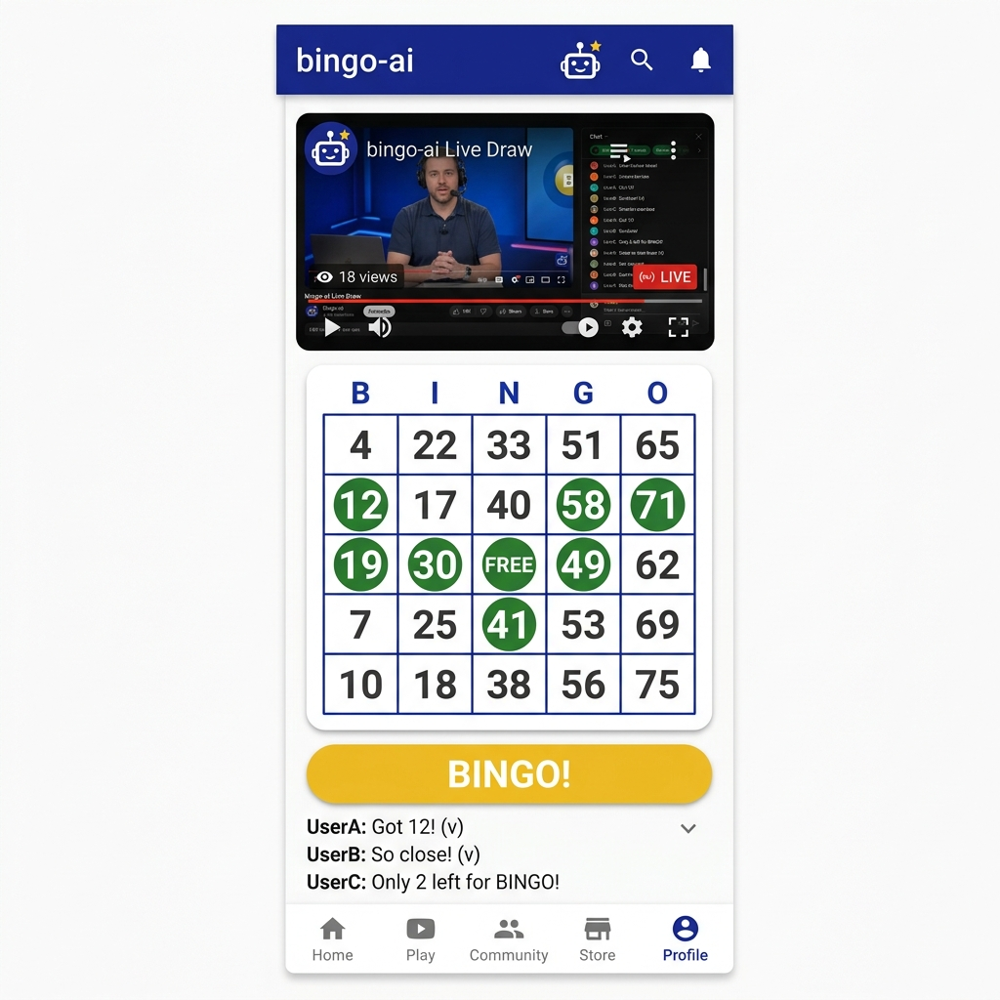
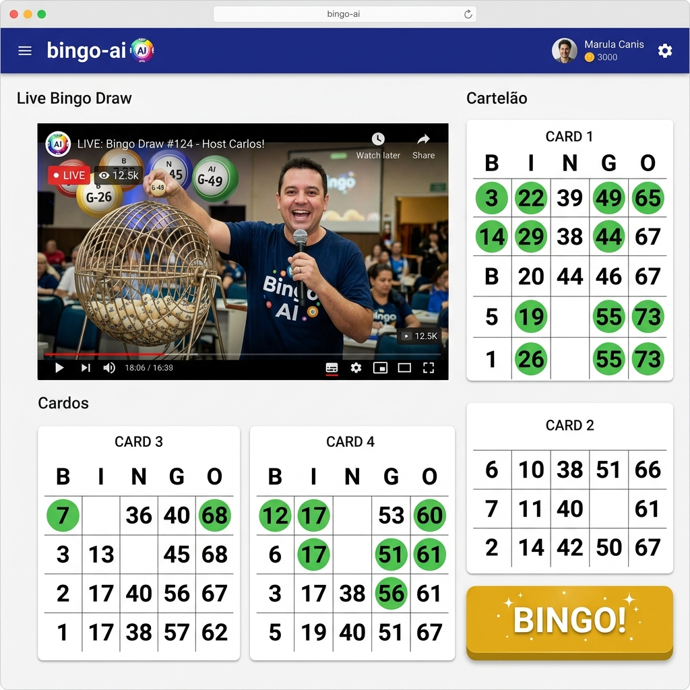

Visualizando a "Comunidade Vibrante" em ação
Utilizamos o Material Design como base, focando em botões grandes, tipografia Roboto clara e o uso semântico das cores Azul Real (Confiança) e Ouro (Celebração).

O vídeo da live fica fixo no topo, permitindo que a Maria acompanhe o locutor sem perder a visão da cartela. Os números são grandes e a marcação é instantânea.

Aproveita o espaço lateral para mostrar o "Cartelão" (4 cartelas). Ideal para quem assiste pelo computador e quer ter uma visão panorâmica de todas as suas chances.